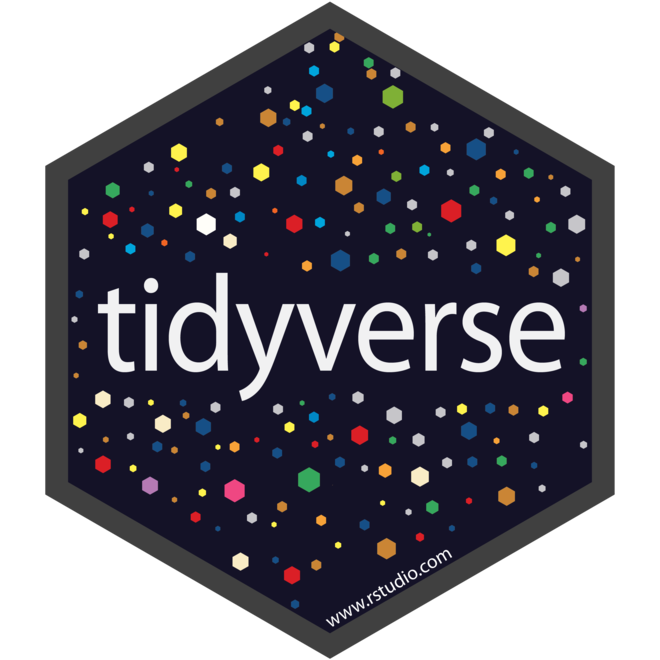

Intro to Data Science
RMarkdown Analogy


Practice: RMarkdown Files
- Install the
rmarkdownpackage- Remember to use the
install.packagesfunction
- Remember to use the
- Create a new RMarkdown file!
- File New File R Markdown…
- In resulting pop-up, skip to bottom and click “OK”
Look at (1) YAML, (2) Plain text, and (3) code chunks
- Take notes on anything that jumps out at you
- Click the “knit” button
Temperature Check
How are you Feeling?

Practice: Load Data

- Now, use
read.csvto read “minnow.csv” into R- Remember to assign it to an object!
- First thing after reading in data: check structure!
- Can use
strordplyr::glimpse
- Can use
- What do you see?
Tidyverse Background
- Ecosystem of inter-related packages & functions
- Very human-readable
- Extremely popular & commonly-used



Practice: Wrangling with dplyr
- Filter the minnow data to only cases where the species is Stoneroller or Chub
- There are (at least) three ways of doing this; can you identify them all?
- For that subset, make new columns where river depth and fish nest diameter are in meters
- Next, keep only the transect, species, diameter in meters, and depth in meters columns
- There are two ways of doing this; can you identify them both?
- Check your work! What are the dimensions of the final data object?
- Should be 14 rows and 4 columns
Temperature Check
How are you Feeling?